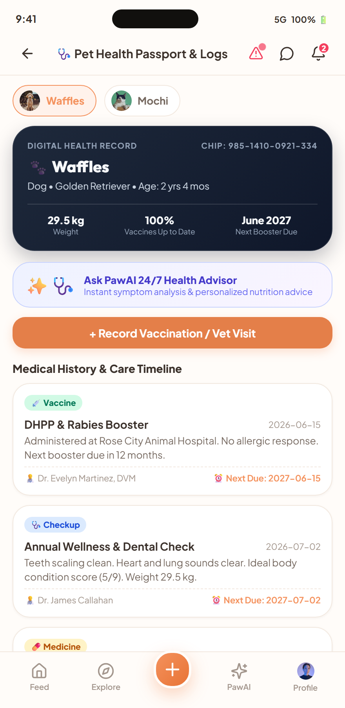
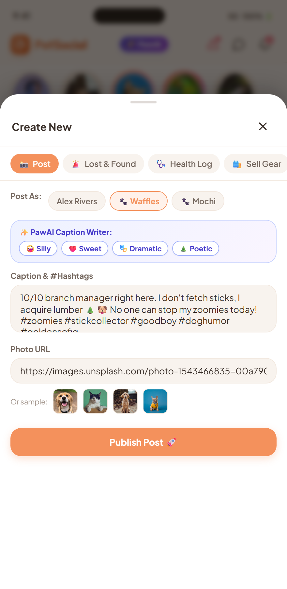

Key Learnings from the UI/UX Session
1. Purpose-Driven Information Architecture
Eliminated visual clutter common in generic social apps. Every component serves an explicit pet welfare need (Health, Lost Alerts, Playdates).
2. Warm, Emotionally Resonant Aesthetic
Adopted warm paper tokens (#FFFCF9) and soft coral (#F4915C) to evoke warmth, care, and trustworthiness rather than cold tech interfaces.
3. Thumb-Zone Mobile Ergonomics
Bottom navigation bar, floating action buttons, and swipeable modal bottom sheets designed for single-hand mobile interactions.
4. Privacy & Anonymity by Design
Separation of Owner identity vs Pet identity, giving users seamless Ghost Mode controls without losing app functionality.

Design Process & User Flow
1. User Research & Empathy Mapping
Identified top friction points: emergency panic when a pet is lost, vet booking delays, and uncertainty over toxic foods.
2. Dual-Persona Architecture
Designed a switchable profile system where the Pet has its own followers and posts, decoupled from the owner's private account.
3. AI-First Interaction Layer
Positioned PawAI directly in the bottom navigation for 1-tap access to health vision scanning and symptom triage.


✨ PawAI Pet Intelligence Suite
PetScan AI (Vision & Biometrics)
Neural vision analyzes breed purity (98.4%), Body Condition Score (BCS 5/9), coat health, and mood detection in real-time.
PawDoctor 24/7 Triage Chat
Immediate veterinary-trained symptom triage with automated severity flags (Low, Moderate, Critical Emergency).
Voice & Emotion AI Translator
Captures bark/meow audio waveforms and translates pet feelings into entertaining, heartwarming thoughts.


AI Playdate Matcher & Voice Translator
Playdate Harmony Engine
Calculates behavioral synergy (e.g. 96% Match between Waffles & Oliver) by matching energy levels and play styles.
Direct Chat with Instant Scheduling
1-tap playdate invitations, encrypted messaging, and simulated real-time neighborhood coordination.
Magic Pet Portrait Studio
Generative AI transforms pet photos into Pixar 3D, Cyberpunk, and Renaissance fine art avatars.

Stories, Reels & AI First-Person Captions
Interactive Story Rings & Viewer
Auto-advancing 24h stories with progress bars, tap navigation, hold-to-pause, and direct story replies.
AI First-Person Caption Writer
1-tap generative caption tones (Silly, Sweet, Dramatic, Poetic) written from the pet's perspective.
Haptic Double-Tap Micro-Interactions
Double-tap photo for floating heart burst animation, hashtag discovery, and identity-switched comments.


Emergency Alert Network & Adoption Hub
5-Mile Emergency Broadcast
Instant lost pet alerts pushed to nearby users with location markers, reward tags, and 1-tap call buttons.
Verified Pet Adoption Center
Filter by species, temperament tags, and vaccination status with direct shelter inquiry messaging.
Conflict-Free Vet Booking
Real-time slot calendar that prevents double bookings and syncs with the Pet Health Passport.

Design System, Typography & Dark Mode
Harmonious Color Palette
Warm paper background (#FFFCF9), Coral Primary (#F4915C), Emerald for verified health, and Obsidian Dark Mode.
Modern Typography Scale
Plus Jakarta Sans for crisp readability + Outfit for bold, friendly headings and brand identity.
True Dark Mode (#181615)
Reduced eye strain during nighttime pet logs and evening walks, preserving battery life on OLED screens.